I played a first-time ICrave user — standing in Hayes Valley, hungry, and more inclined to trust a friend's vouch than a star rating. I walked four flows end to end, recorded every interaction, screenshotted each screen, and checked it all against the v1 design brief. Below: what the product gets right, where it creates friction, and the highest-leverage fixes.
The concept holds up: this reads as a map of dishes, not restaurants, and the whole app bends toward one verb — claim. The five design principles are visible in the UI, and all three brief flows are present and tappable.
The map got the biggest upgrade from the mockup: a real, zoomable San Francisco with 14 dishes scattered across neighborhoods and full-text search. It genuinely feels like a surface you explore rather than a static list.
The brief is met in spirit and structure — but a few gaps keep it from feeling finished, and two of them sit right on the behaviors the whole app is staked on: the claim artifact and the notify payoff. At a glance:
ProblemOn the claim card, when you skip the optional on-site photo, the card falls back to the planter's clip (Gee's croissant). Your claim then looks identical to the pin you claimed — there's no visible proof you personally went.
Why it mattersScreen 3 of the brief specifies "your photo," and the Aura mechanic it borrows is "beautiful proof as identity." Proof-of-presence is the entire reason the artifact exists, and claims-per-week is the north star — the artifact is the reward that drives it.
FixPromote the photo to the hero of the on-site step (big camera CTA, labelled "your proof"), default to capture, and compose "Share to story" from it. Keep skipping possible but visually secondary, and when skipped, mark the card "no photo yet" rather than silently reusing the planter's image.
ProblemViewing as Gee, the activity reads "You claimed your Sage-Feta Pastry." From the planter's point of view, "You" is the claimer, not Gee — so it's ambiguous who actually went.
Why it mattersThe notify step — "your taste landed" — is the retention engine (geocaching's owner stewardship + logbook). It only works if the planter can see who their taste landed for.
FixRender the claimer's display name/handle ("Das claimed your Sage-Feta Pastry"), show their avatar, and add a one-tap "see their claim card" or "thank them."
ProblemThe Go-now heads-up hardcodes "It's 1:10 PM" while the status bar reads 9:41, and "Open till 3 PM / Opens 5 PM" are static strings unrelated to that clock.
Why it matters"Only show true facts" is the principle the brand is built on — and this is the exact screen built to earn that trust. A visibly inconsistent clock quietly undermines it.
FixDrive every time string (heads-up, open/closed, "sells out soon") from one mock "now" so the facts stay internally consistent.
ProblemAt the default zoom the Hayes Valley pins (pastry, canelé, gelato) overlap into a single glowing blob — you can't tell there are three distinct dishes a block apart.
Why it mattersThe map is the product now; pin density directly degrades the core "explore" moment and can hide the freshest nearby pin behind another.
FixAdd marker clustering (a count badge that spiderfies/expands as you zoom in), a "recenter on me" control, and a subtle "N dishes nearby" count so roaming always has a way home.
ProblemTapping the empty search bar shows nothing, and results aren't distance-sorted. On the dish page, the locked CLAIM button is full-brightness primary with only small text explaining the gate.
Why it mattersFirst-timers don't know what's searchable, nearest-first matches real intent, and a bright-but-locked button invites a tap that "fails."
FixSeed the search on focus with nearby / go-now dishes, sort results by distance, and label the gated action "Claim · walk to [SPOT]" — reserving the bright state for when it's actually unlocked.
Problem"Add to a trail," the "10-sec clip," and "I'm going" currently lead nowhere (toasts / static placeholders), and there's no location-permission moment anywhere.
Why it mattersDead affordances erode trust in a prototype meant to feel real, and the brief explicitly wants location requested only at plant/claim time — a moment that also reads as honest.
FixWire one curated trail end-to-end (or hide the button), make the clip playable or drop the play affordance, give "I'm going" a real payoff (a map flag / a nudge) or remove it per the anti-saves stance, and add a lightweight permission prompt at plant/claim.
The core loop. A nearby pin should pull me off the couch; claiming should feel like proof I went.
What I did: Opened the app and was immediately summoned — "Gee pinned a dish 0.4 km away." Tapped through to the Sage-Feta Pastry, read Gee's vouch, hit Claim, watched it simulate walking me to LOQUAT, logged the claim, and got a CLAIMED card. It showed up under Claims as "1 this week."
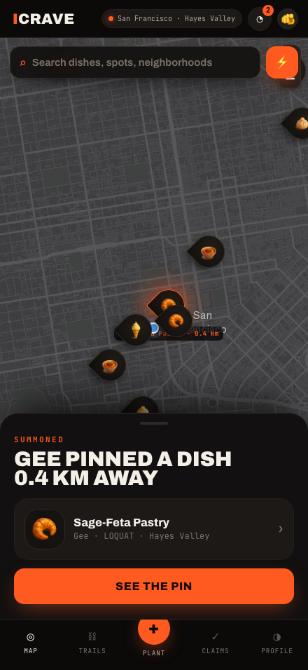
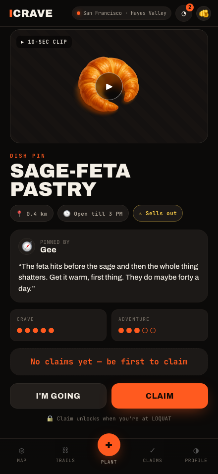
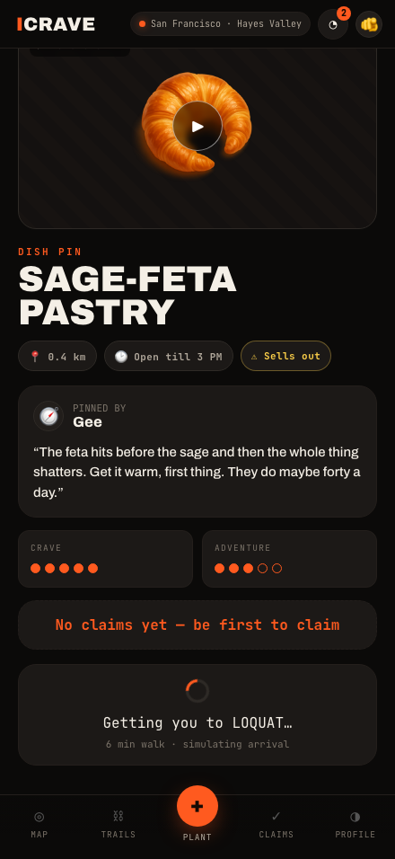
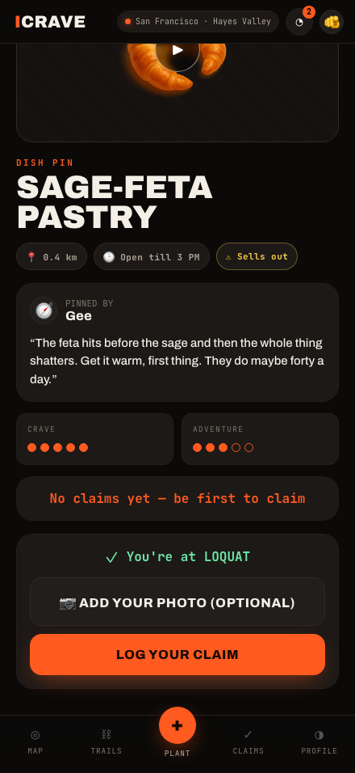
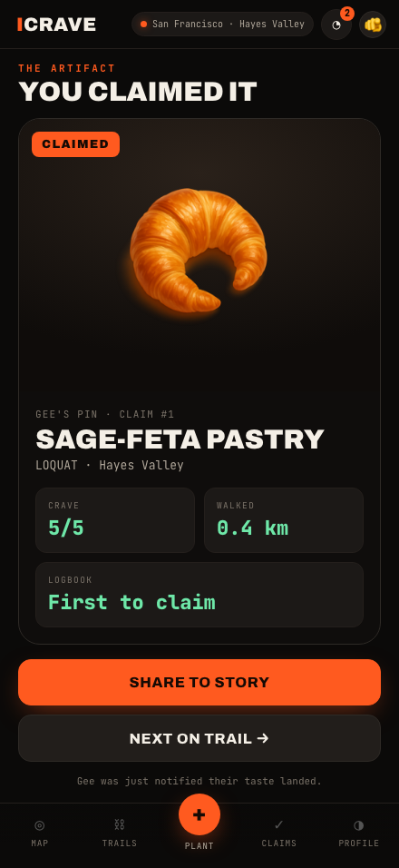
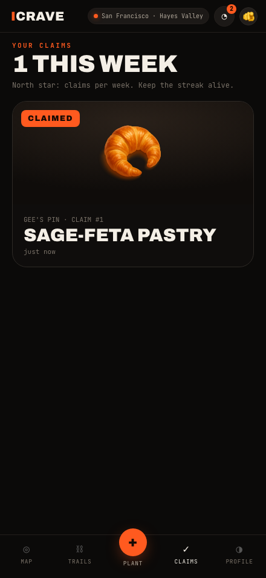
Show me I can do something right now — without inventing urgency.
What I did: Tapped the ⚡ button on the map into the Go-now view. One pin was lit loud; the sheet listed four fact tiles. Committing opened the pin detail: four checked facts, a plain-language heads-up, and "Go now · 6 min walk."
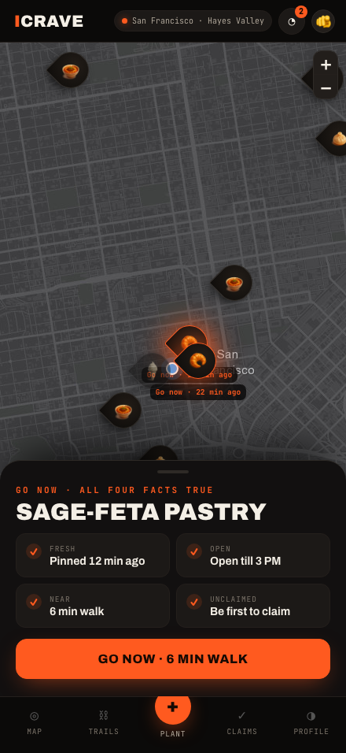
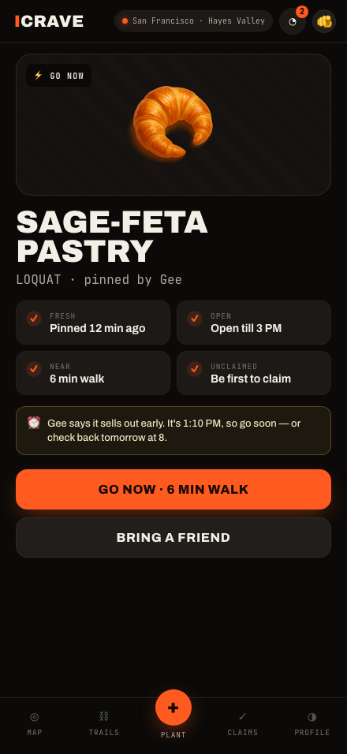
The map is the product. Can I find a specific craving and roam the city?
What I did: Searched "dumpling" — two results (Soup Dumpling, Xiao Long Bao) with spot and neighborhood. Picked one; the map flew to Mission Dolores and highlighted the pin. Zoomed out to see all 14 dishes spread across Hayes Valley, the Mission, North Beach, the Marina, Richmond and more.
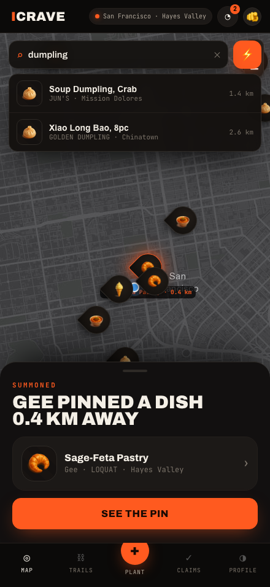
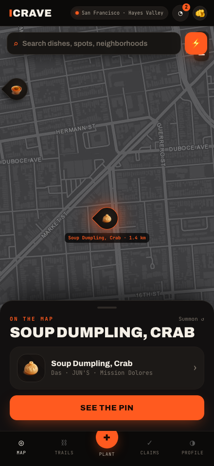
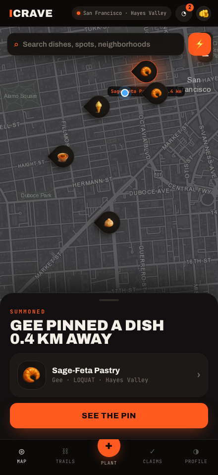
Most people won't plant — but when they do, the "your taste landed" payoff is what brings them back.
What I did: Planted "Smoked Brisket Taco" at LOQUAT — picked a dish icon, named it, wrote why to go, dropped the pin (0 claims, "we'll tell you the moment someone claims it"). Then I claimed Gee's pastry as myself, switched to viewing as Gee, and found "You claimed your Sage-Feta Pastry — just now" waiting in Gee's activity.
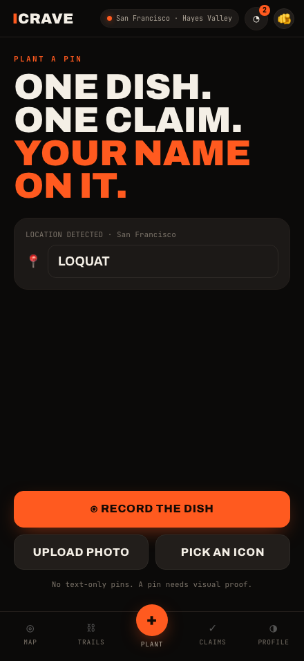
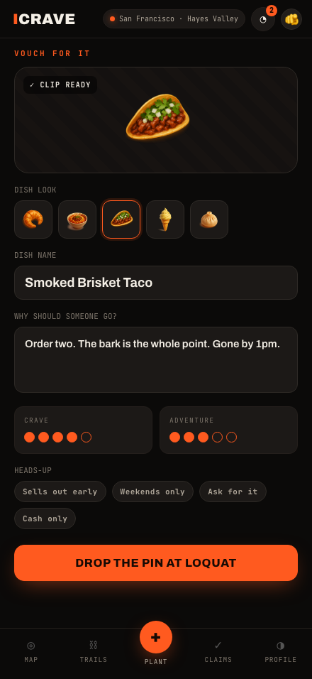
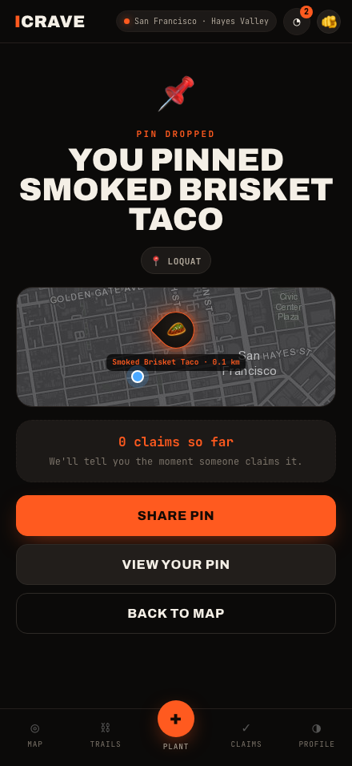
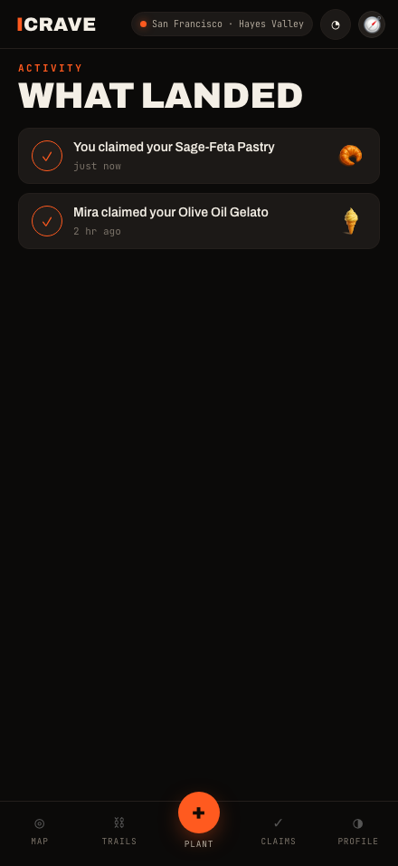
| Priority | Finding | Recommendation |
|---|---|---|
| HIGH | Notification says "You claimed…" from the planter's view — ambiguous actor. | Use the claimer's name/handle in notification copy. |
| HIGH | Claim card falls back to the planter's clip when the user skips their photo. | Make on-site photo the hero step; the artifact should be your proof. |
| MED | Clock inconsistency: heads-up "1:10 PM" vs status bar "9:41". | Drive all time copy from one mock "now." |
| MED | Hayes Valley pins overlap at default zoom. | Add marker clustering with an expand-on-zoom count badge. |
| MED | Locked CLAIM button looks fully enabled. | Label it "Claim · walk to [SPOT]"; reserve full-brightness for the unlocked state. |
| MED | Empty search gives no guidance; results aren't distance-sorted. | Seed nearby/go-now on focus; sort by distance. |
| LOW | "I'm going" sets intent with no payoff or reminder. | Either reinforce (map flag / nudge) or drop, per the brief's anti-saves stance. |
| LOW | "Add to a trail" and the 10-sec clip are stubs. | Hide until real; or wire a single curated trail end to end. |
| LOW | No location-permission beat. | Ask at plant/claim (per brief) for an honest first-run moment. |
Bottom line: the loop is tight, legible, and genuinely fun to walk — the summon → claim → artifact → notify chain all fires, and the map now earns its place as the centerpiece. The highest-leverage work is making the claim artifact unmistakably yours (photo + honest actor names), then polishing map density and the small truth-telling details the brand is staked on.
Open the live app →